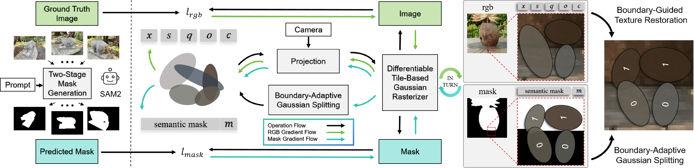
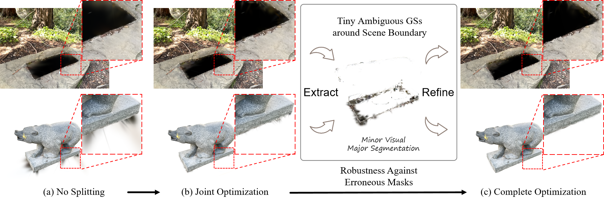

What is COB-GS?
3D segmentation based on 3D Gaussian Splatting (3DGS) struggles with accurately delineating object boundaries, as Gaussian primitives often span across object edges due to their inherent volume and the lack of semantic guidance during training. Clear Object Boundaries for 3DGS Segmentation aims to improve segmentation accuracy by clearly delineating blurry boundaries of interwoven Gaussian primitives within the scene.


Method Overview
Boundary-Adaptive Gaussian Splitting and Boundary-Guided Texture Restoration
COB-GS is a 3DGS refinement and segmentation method that that jointly optimizes semantics and appearance to register semantic masks to Gaussian primitives. We introduce mask label as an additional attribute to each Gaussian for segmentation. Moreover, we reveal correlation between the gradient direction of labels and the supervising category at the pixel level, which is a strong discriminator of ambiguous Gaussian primitives on the boundary. Speciffcally, during the mask optimization phase, our approach utilizes gradient statistics of the mask label to identify and split boundary Gaussians, allowing precise alignment with object edges. In the scene optimization phase, we refine the scene texture on the correct boundary structure to maintain visual quality.
Robustness Against Erroneous Masks
In fact, the binary masks predicted by the trained 2D vision model exhibit discreteness, which often leads to inaccuracies and inconsistencies in object boundary predictions across different views. By refining tiny boundary Gaussians, we exclusively enhance robustness of our method against inaccurate masks from pre-trained model.
Quantitative Results
Segmentation Evaluation
Visual Evaluation
Quantitative Results

BibTeX
@inproceedings{zhang2025cobgs,
title = {COB-GS: Clear Object Boundaries in 3DGS Segmentation Based on Boundary-Adaptive Gaussian Splitting},
author = {Zhang, Jiaxin and Jiang, Junjun and Chen, Youyu and Jiang, Kui and Liu, Xianming},
booktitle = {CVPR},
year = {2025}
}